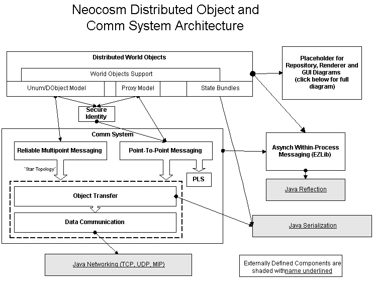

Neocosm Architecture Overview
Last Updated: 06/01/98
Author: Everyone. Started by slewis@communities.com
Introduction
This document is a high-level architecture overview for the Neocosm system.
The intention is to provide a clear overall view of the Neocosm system
architecture, and provide links for more detailed subsystem requirements,
architecture and design documents, API definitions, and subsystem source
code. This document, where possible, will reference these external
documents as they become available. These documents will a) give
details on all of the subsystems; b) identify owners for each subsystem;
c) can be used to track requirements, architecture and design, and implementation
progress.
Here is a graphical depiction of the Neocosm subsystems (adapted and
enhanced from YesterCosm architecture
diagram provided by Robj):

The above is a clickable image, and clicking on relevant subsystem boxes
will take you to a page assigned to that subsystem (eventually...I need
to get the mechanics of this in place).
Here are the subsystems from this diagram, with links to the relevant
other documents:
Distributed World Objects
Secure Identity
Comm System
Asynchronous Within-Process Messaging Support (ELib)
State Bundles Serialization
Java
APIs
Renderer and GUI subsystem diagram
More to come...
{kind=link}